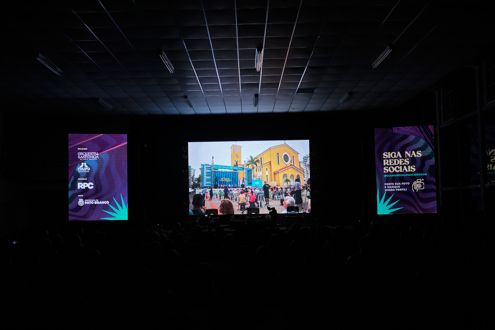
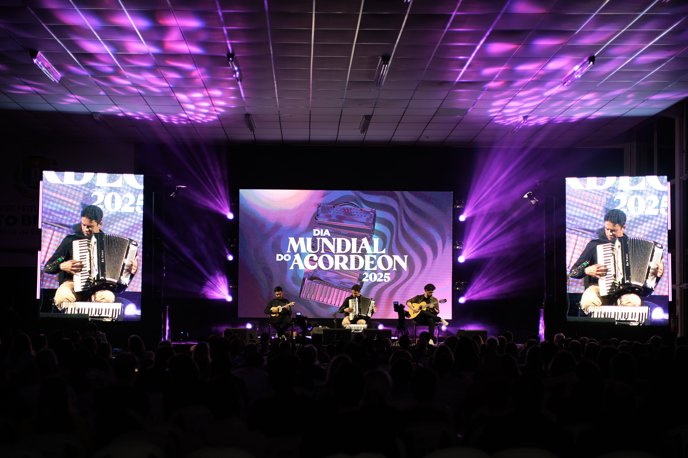

<!-- =======================
        3ª Edição – 2025
======================= -->
<section id="ed2025" class="section edicao" style="background: #faf7f3; padding: 80px 0; box-shadow: inset 0 8px 16px rgba(0,0,0,0.05);">
  <div class="container">
    <h2 class="subtitulo-classico">3ª Edição – 2025</h2>
    <div class="linha-dourada"></div>

    <p class="texto-edicao">
      A terceira edição do <strong>Dia Mundial do Acordeon</strong>, realizada em 3 de maio de 2025 no Largo da Liberdade, marcou um novo capítulo na história do evento. 
      Com uma programação vibrante, o festival reuniu artistas de diferentes regiões e contou com um público expressivo ao longo de todo o dia, celebrando a força da música e da cultura do acordeon.
    </p>

    <p class="texto-edicao">
      Painéis de LED, orquestra sanfônica, food trucks e ações de sustentabilidade transformaram o centro de Pato Branco em um grande espaço de convivência e celebração. 
      A Orquestra Sanfônica de Pato Branco dividiu o palco com grandes artistas convidados, em uma noite de emoções e diversidade musical.
    </p>

    <!-- GALERIA 2025 -->
    <div class="galeria">
      <a class="foto" href="FOTOS2025/FOTO1.jpg" target="_blank">
        
      </a>
      <a class="foto" href="FOTOS2025/FOTO2.jpg" target="_blank">
        
      </a>
      <a class="foto" href="FOTOS2025/FOTO3.jpg" target="_blank">
        
      </a>
    </div>
  </div>
</section>
